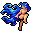

水棲の民の一覧 List of merfolk
英語版 CrawlWiki の記事「List of merfolk」(0.27 向け、2021-11-09 版)の翻訳です。原文の著者は編集履歴をご覧ください。
この記事は 0.27 の時点の内容で、最新の 0.34 とは違うところがあるかもしれません。
このページはさまざまな水棲の民のモンスターについての記事だ。プレイヤーの種族については水棲の民を参照。
| 「やがてようやく、わが思いがよみがえってきたとき、 わたしはもはや以前のわたしではなかった。 |
基本情報
水棲の民は、浅瀬を侵入者から守る、身軽で水陸両生の人型種族だ。防具は軽いものしか身につけていないが、多くはそこそこの長柄武器を持ち、投げ網やジャベリンまで持っている者もいる。水の中で戦うのは避けたい。自分たちの領分である水中では、戦いに有利な補正を得るからだ。
水棲の民にはいろいろな職業の者がいて、それぞれが独自の力を持っている。
小技
水棲の民の本当の怖さは、浅瀬がまったく開けた地形だという点にある。騒音を立てすぎると水棲の民の軍勢を呼び寄せかねないし、この地のほかの怪物たちまで寄ってくる。飛行も泳ぎもできないと、浅い水脈でなすすべなくばしゃばしゃやっているうちに、身動きが取れなくなることも十分ありうる。
水棲の民の種類
m  水棲の民 - 水棲の民の軽装の歩兵。
水棲の民 - 水棲の民の軽装の歩兵。
m  水棲の民の刺殺者 - トライデントを振るう屈強な戦士で、すばやい突きの連打で敵を刺し殺す。
水棲の民の刺殺者 - トライデントを振るう屈強な戦士で、すばやい突きの連打で敵を刺し殺す。
m  水棲の民の投槍兵 - 安全な海の中からジャベリンを投げつけてくる、恐ろしい魚人たち。
水棲の民の投槍兵 - 安全な海の中からジャベリンを投げつけてくる、恐ろしい魚人たち。
m  水棲の民の水占術師 - 水の魔術を操り、波を思うままにする危険な術者。
水棲の民の水占術師 - 水の魔術を操り、波を思うままにする危険な術者。
m 

m  水棲の民のセイレーン - 人を魅了する歌い手。その声はあまりに美しく、周りにどんな危険があろうと、聞く者をその場に留めて聞き入らせてしまう。
水棲の民のセイレーン - 人を魅了する歌い手。その声はあまりに美しく、周りにどんな危険があろうと、聞く者をその場に留めて聞き入らせてしまう。
m  水棲の民の生き神 - 嗜虐的な歌い手。聞き手をすっかり虜にしてしまうので、溺れ死んだ犠牲者たちの霊までもが起き上がり、その命令に従う。
水棲の民の生き神 - 嗜虐的な歌い手。聞き手をすっかり虜にしてしまうので、溺れ死んだ犠牲者たちの霊までもが起き上がり、その命令に従う。
ユニークの水棲の民
m  イルスィウ - 腹立たしいことに、たいてい透明になっている水占術師。水棲の民の軍勢を率い、水の精霊を呼び出して助けにする。
イルスィウ - 腹立たしいことに、たいてい透明になっている水占術師。水棲の民の軍勢を率い、水の精霊を呼び出して助けにする。
廃止された水棲の民
m  人魚 - 人を魅了する声を持つ水棲の民で、聞いた者をその場から離れられなくした。
人魚 - 人を魅了する声を持つ水棲の民で、聞いた者をその場から離れられなくした。
変更履歴
0.16 で、人魚はセイレーンに、セイレーンは水棲の民の生き神に、それぞれ名前が変わった。